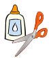

Nonlinguistic Representations/Graphic Organizers
 Objective:
Objective:
In this module, you will learn about nonlinguistic representations and graphic organizers.
|
|
Reading Assignment for Activity 4. |
*Focus on Effectiveness: Nonlinguistic Representations / Graphic Organizers
All the senses come into play in learning. In most classrooms, however, reading and lectures dominate instruction, engaging students through the linguistic mode.
Learners also acquire and retain knowledge NONLINGUISTICALLY through:
|
|
|
When students make concept maps, idea webs, and other types of nonlinguistic representation, they are actively creating a model of their thinking. |
|---|---|---|
|
|
When students explain their models, they are putting their thinking into words. | |
|
|
Dramatizations and Computer simulations also encourage exploration and experimentation by allowing learners to manipulate their learning experience and visualize results. |
Teachers who wish to take advantage of ALL MODES OF LEARNING will encourage students to make nonlinguistic representations of their thinking. These can take many forms. This may lead to new questions and discussions, which will in turn promote deeper thinking and better understanding.
Implementation
| Helping students understand and represent knowledge nonlinguistically is the most under-used instructional strategy (Marzano et al., 2001). Taking advantage of this teaching tool requires focusing on current classroom practice and looking for opportunities to engage students in multiple modes. Research suggests best practices for instruction: |
Model use of new tools: Activities that involve nonlinguistic representation may be new to students who are accustomed to learning through lectures and readings. Scaffold student learning as you introduce activities such as concept maps, idea webs, and computer simulations by modeling how to use tools that help them represent their thinking nonverbally. Gradually remove the scaffolds so students eventually work independently with the new tool or technology.
Use nonlinguistic modes in the content areas: Math and science classrooms offer ideal settings for incorporating nonlinguistic learning experiences. Language arts classrooms provide natural connections from classifying words to modeling plotlines. Models, graphs, imagery, and other tools enable students to engage in actively constructing representations of their understanding
Foster cooperative learning: Encourage students to work in small teams when they are constructing nonlinguistic representations. Students' questions and discussions will help them communicate and refine their thinking.
Teach interpretation of nonlinguistic forms also: Finding patterns helps students organize their ideas so that they can later recall and apply what they have learned. Teach students to represent and interpret information in graphs, charts, maps, and other formats that will help them see patterns and make connections.
Simulations offer new modes for learning: Use simulation software or online simulations to let students practice making predictions and testing outcomes. Combine nonlinguistic experimentation with verbal discussion, which prompt students to think through their understanding and raise new questions.
Stimulate body-mind connections: Kinesthetic learning is not just for primary grades. Older students continue to learn through physical activities. Incorporate dramatizations, dance, music, simulations, and other active learning experiences.
Integrate nonlinguistic forms into note-taking. Encourage students to take notes that are meaningful to them. Model use of sketches, graphs, and symbols.
*2005 Focus on Effectiveness is a product of the Northwest Regional Educational Laboratory. These materials are public domain and may be reproduced without permission. The following acknowledgment is requested on materials which are reproduced; Developed by the Northwest Regional Educational Laboratory.
Notes and Activities: Nonlinguistic Representations / Graphic Organizers
The process of storing information through imagery is referred to as nonlinguistic. Although often words and phrases are used in the process, they are used in a specific format thereby forming an "image," a form that organizes the words and phrases that facilitates recall, remembering the contained information.
Why is this necessary? It works because we usually ask students to talk or read about the content we want them to learn. Students are often left to develop their own nonlinguistic representations, but mostly they do it haphazardly, which influences learning negatively.
Research now tells us that when the teacher facilitates the development of nonlinguistic representations with their students, the effect on student achievement is strong. Research has also documented an increase in brain activity when stimulated by the creation of nonlinguistic representations.
REMEMBER! . . . . the goal of students developing nonlinguistic representations of content is for them to best retain and recall important information.
This can be done in a variety of ways:
- creating graphic representations;
- making physical models;
- generating mental pictures;
- drawing pictures and pictographs;
- engaging in kinesthetic activity.
Watch this video that summarizes research on nonlinguistic representation
NOW LETS PUT IT INTO PRACTICE
Take a look at a DESCRIPTIVE PATTERN ORGANIZER.

TIPS
- This pattern organizer can be used to identify facts about
- specific topics,
- persons,
- places, and
- things.
- For this organizer, sequence is not important, facts can appear anywhere, in any order as they are equally relevant to the topic being described.
- Although ovals are shown above, squares, circles, any shape can be used to contain the topic and the fact.
- The size can vary depending on the length of the topic and fact.
- The idea here is that the student can best remember facts about a topic if MORE than words are used.
- The topic becomes an image that can be recalled in an organized way when visually represented instead of just isolated ideas/facts.
Think about the word: " S A L T "
What is the first thing that happened in your mind?
3 things can happen.
- You can either recall the word and how it is spelled FIRST OR
- You can recall an image of the spelled word, seeing the word in your mind's eye, or you can bring up an image of a salt crystal, or a salt shaker OR
- You can conjure up a third image, you can actually have a TASTE reaction, recall a very salty taste.
More than likely, the last two of the 3 are usually what you recall, an image of a salt crystal or salt shaker, or a taste reaction.
| Please turn to the Descriptive Pattern Organizer in your handouts. | |

|
1. In the center oval, write the TOPIC: Table Salt. 2. Using each of the four ovals, answer the following questions.
|
Another type of organizer is a
TIME SEQUENCE PATTERN ORGANIZER
Students use this type of organizer when content is to be organized/summarized in a specific CHRONOLOGICAL ORDER such as timelines and events in history.
Entries can have specific dates or without dates, following a logical progression from the first event to the culminating event.
Use the Time Sequence Pattern Organizer in your handouts to reflect back on the first appointment you had with our office. Fill in the sequence of events which will lead up to the culminating event the "recommendation for your standard teaching certificate".
Next: Now we are going to look at another Time Sequence Pattern Organizer. This organizer requires students to organize a group of small facts called factoids. Groups of factoids need to be placed in chronological order.
Content Focus: Developmental Stages / Phases of Students
For this activity:
-
the CONTENT is just as important as the strategy.
- You will be looking at several elements and stages of development from early childhood to late adolescence. It is important to understand these stages to help better understand and know where your students in the classroom are functioning.
- This information will also resurface when you go to take your PPR exam - since that test covers early childhood through 12th grade student development.
You will get to cut and paste for this activity!
In your handouts, you will find several pages labeled FACTOIDS.
These factoids are in no particular order.
It is your job to PUT THEM IN ORDER!
You will need to cut out each group of factoids so that you can move them around easily.
Once you have your factoids cut out, look for your handouts with the following labels:
- Developmental Stages 2-5 year olds - (2 pages)
- Physical, Cognitive and Emotional Development of 6-9 year olds
- Physical, Cognitive and Emotional Development of 10-13 year olds
- Physical, Cognitive and Emotional Development of 13-17 year olds
You will need to arrange the factoids in chronological order, and glue them on the appropriate spot on the worksheet.
 Put this completed assignment in your Frameworks Notebook with your completed Activity 4 Summary Page.
Put this completed assignment in your Frameworks Notebook with your completed Activity 4 Summary Page.